Procedure - C
SI B13 01 07 - Procedure - CAll vehicles equipped with N62 and N62TU engines
1. Run the vehicle to the operating temperature.
2. Remove the engine cover to gain access to the fuel rail pressure port.
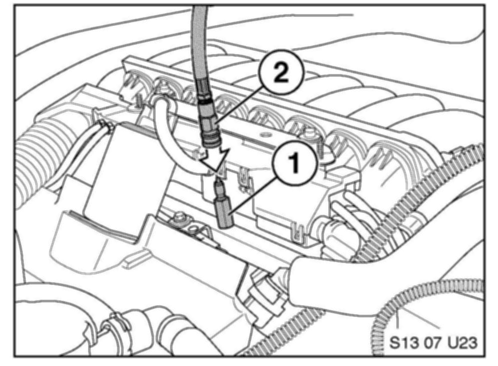
3. Install the EFI Quick Disconnect Fitting to the fuel rail (1). Connect the application cylinder quick connect to the fuel rail adapter (2).
4. Hang the Application Cylinder from the hood striker using the hook and chain. Close the shutoff valve on the applicator.
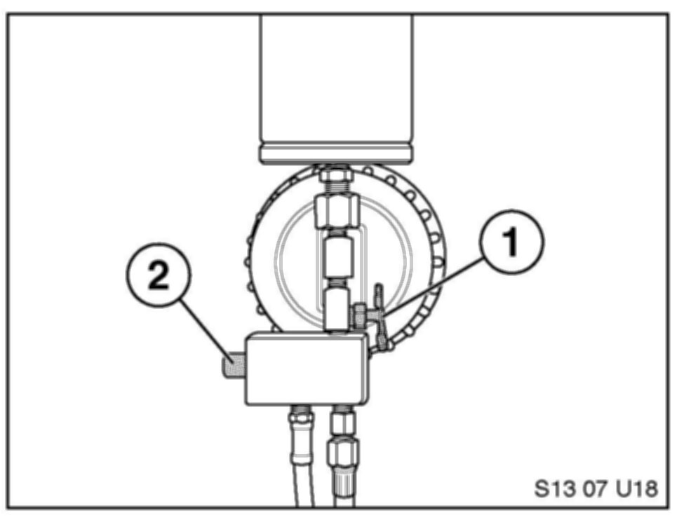
5. Close the shutoff valve on the applicator (1). Press the pressure relief button (2) on the applicator to bleed 1 liter of fuel into the plastic bottle supplied in the kit. Install the cap on the bottle.
Note:
It may be necessary to start and run the vehicle during this step.
6. Remove the fuel pump fuse; refer to the vehicle electrical schematic. Allow the vehicle to run and stall to bleed residual fuel pressure.
7. Remove the applicator quick connect (2) from the fuel rail adapter (1).
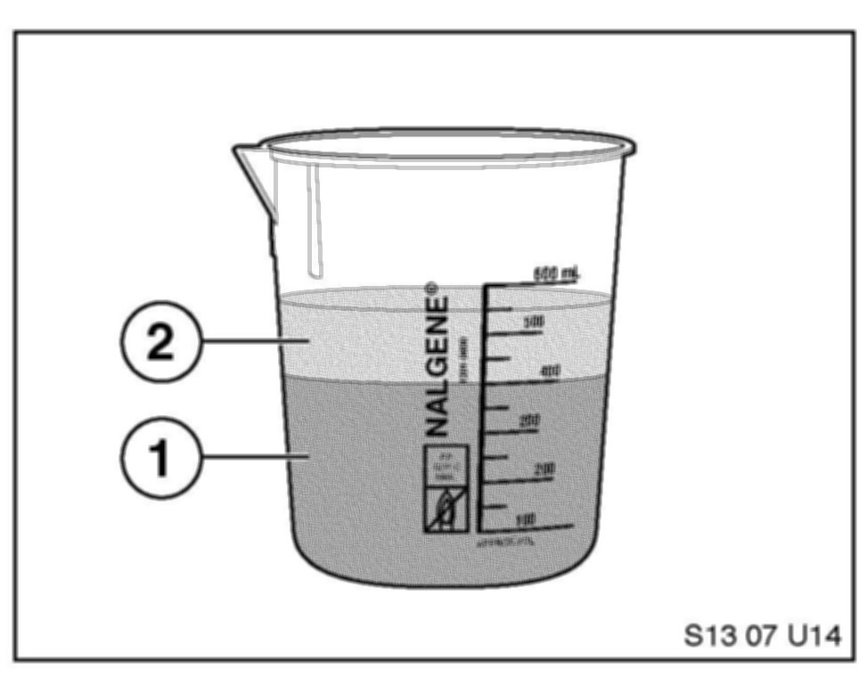
8. Pour 400 ml of fuel (1) and 150 ml of cleaner concentrate (2) into the beaker supplied in the kit.
9. Unscrew the top portion of the applicator and pour the mixture inside the tool. Reinstall the lid hand-tight and hang the cylinder from the hood striker.
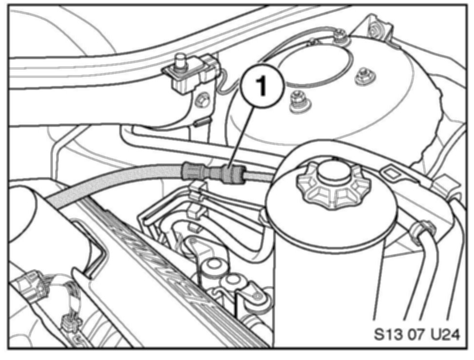
10. Disconnect the fuel line from the fuel rail connection (1).
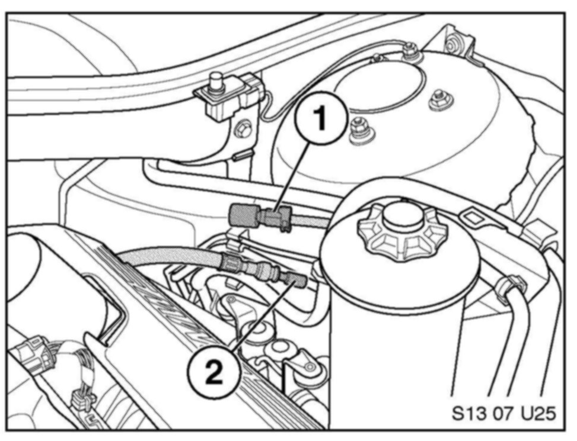
11. Install the Quick Disconnect Female Cap (1) and Quick Disconnect Male Plug (2) to seal the fuel system.
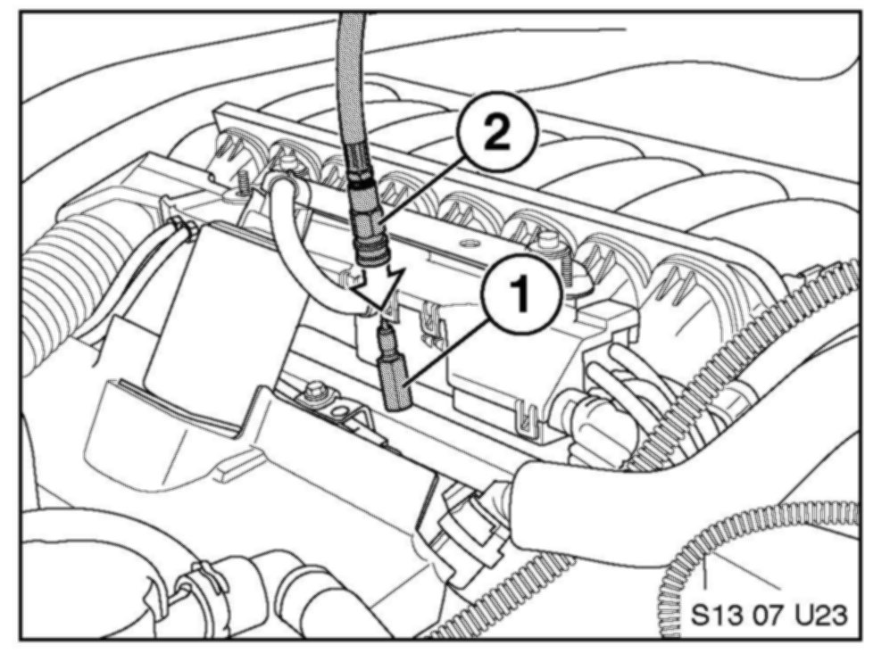
12. Connect the application cylinder quick connect (2) to the fuel rail adapter (1).
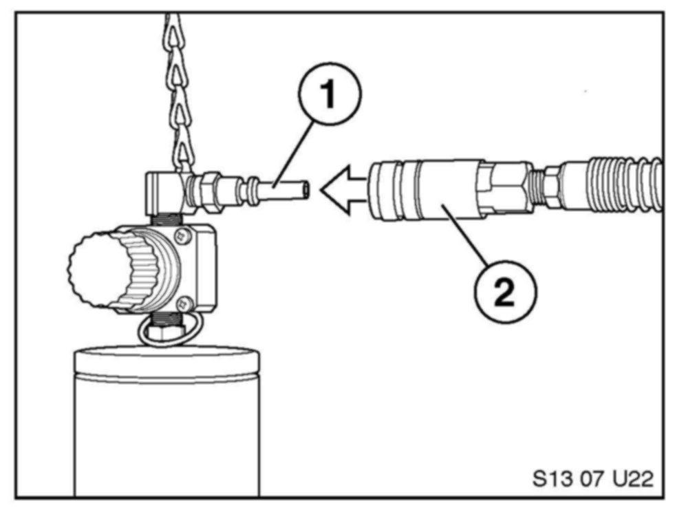
13. Connect the shop air supply (2) to the application cylinder (1).
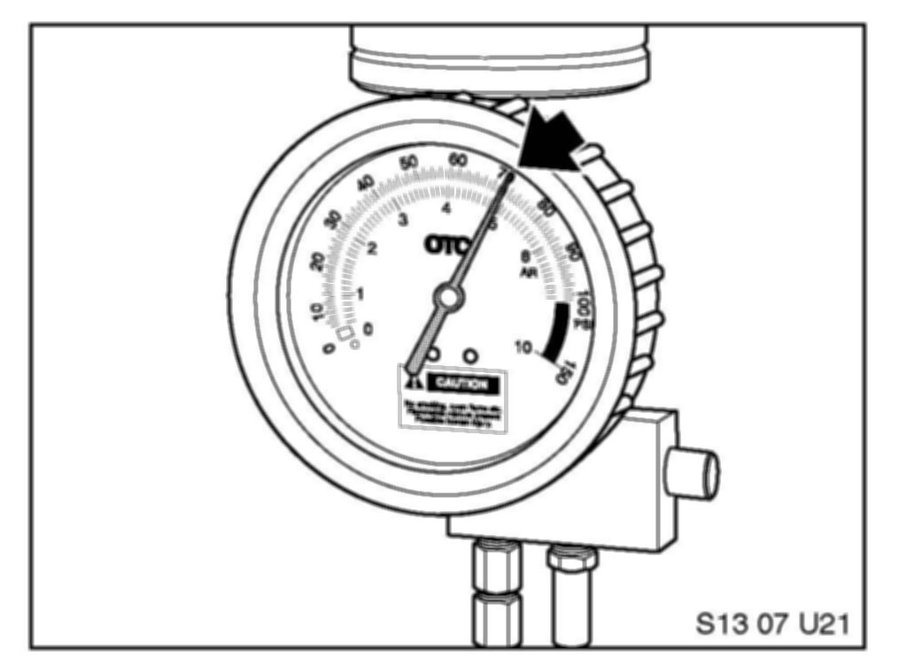
14. Adjust the pressure regulator to 70 PSI if needed and open the shutoff valve at the bottom.
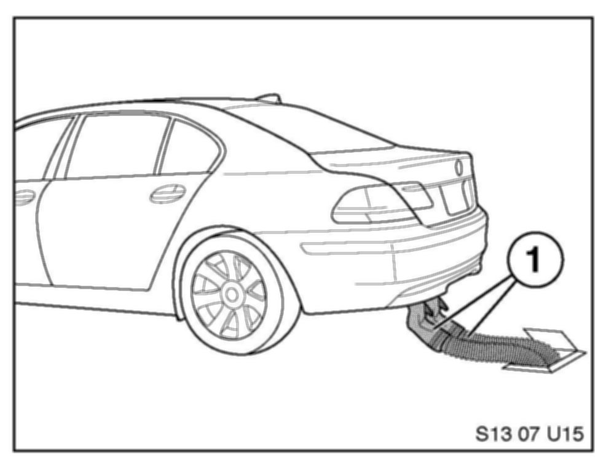
15. Connect the vehicle to the exhaust removal system.
16. Start the vehicle; the vehicle should idle smoothly. The cleaning procedure should last approximately 12-14 minutes. If the vehicle begins to run roughly or misfire then turn the vehicle off. The applicator is nearing empty or is empty: remove the applicator quick connect from the fuel rail.
17. IMPORTANT! Remove the shop air supply hose from the applicator before removing the lid or releasing pressure from the applicator.
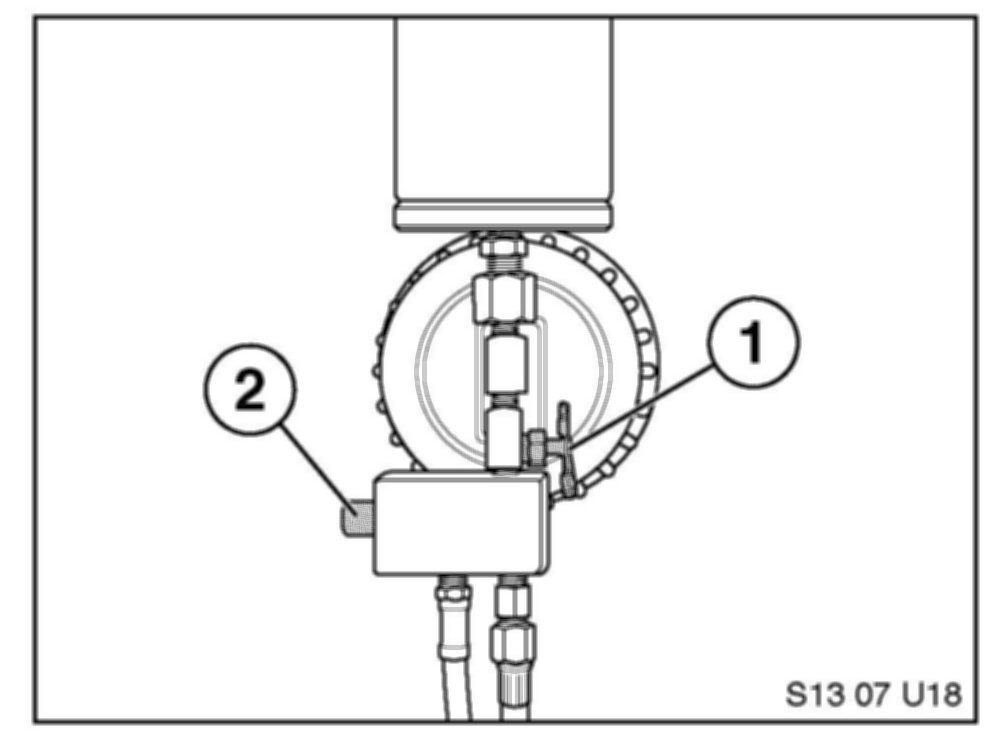
18. Release the pressure from the applicator cylinder with the pressure release button (2). Close the shutoff valve (1).
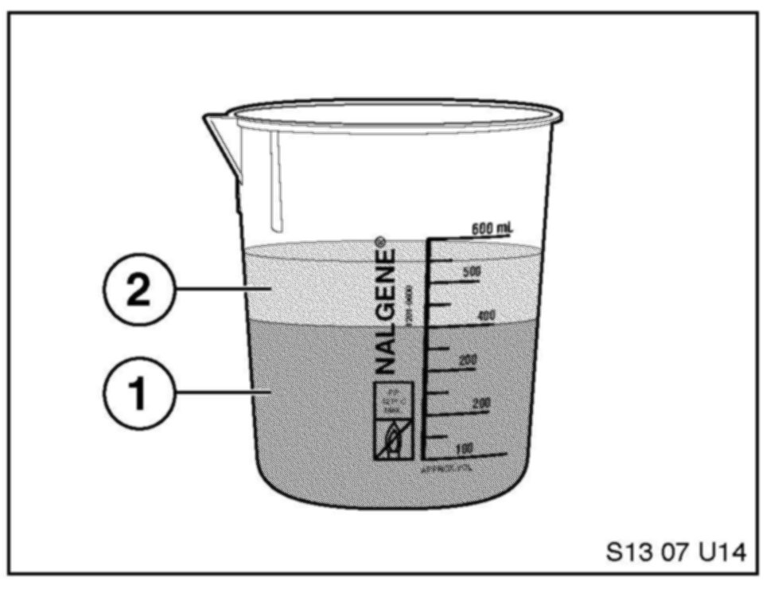
19. Pour 400 ml of fuel (1) and 150 ml of cleaner concentrate (2) into the beaker supplied in the kit again to start the second application.
20. Unscrew the top portion of the applicator and pour the mixture inside the tool. Reinstall the lid hand-tight and hang the cylinder from the hood striker.
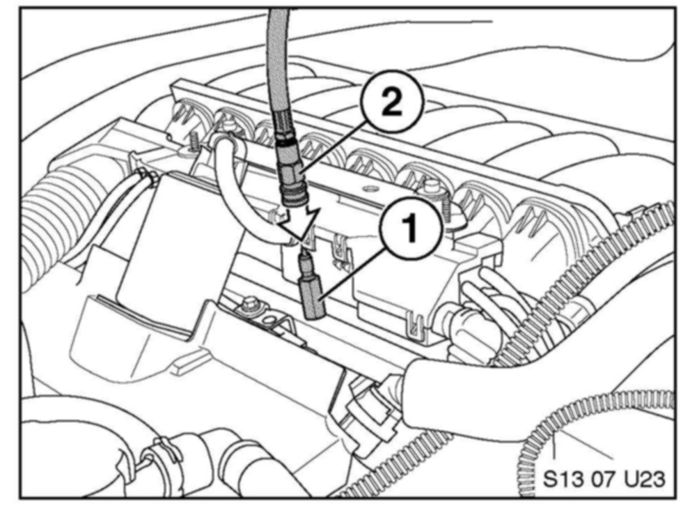
21. Connect the application cylinder quick connect (2) to the fuel rail adapter (1).
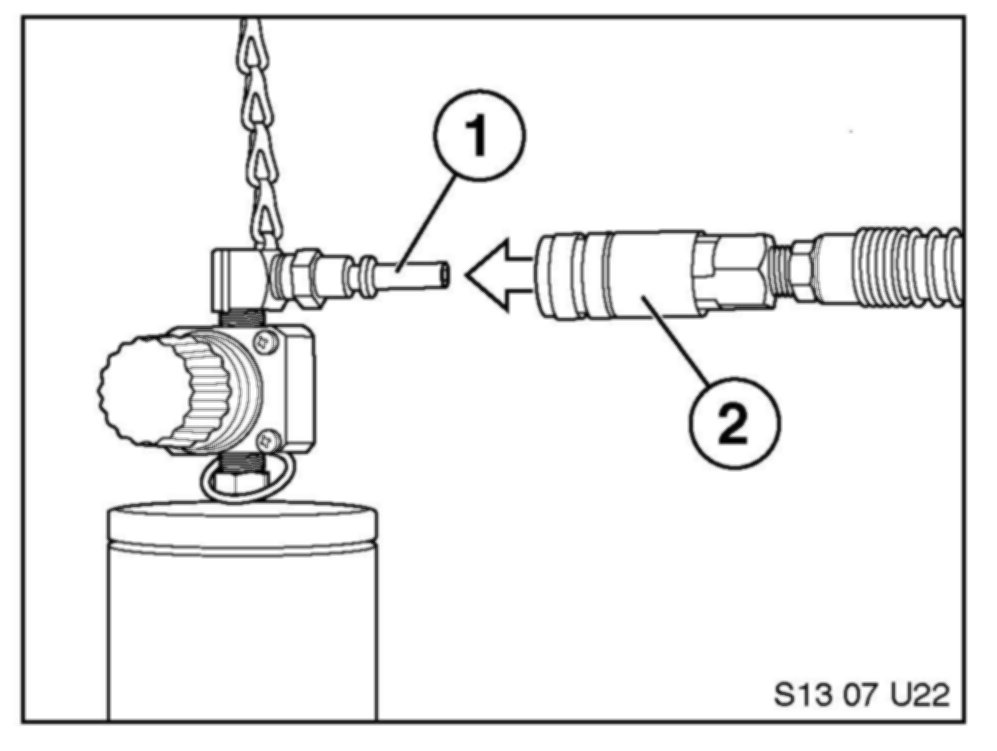
22. Connect the shop air supply (2) to the application cylinder (1).

23. Adjust the pressure regulator to 70 PSI if needed and open the shutoff valve at the bottom.
24. Start the vehicle; the vehicle should idle smoothly. The cleaning procedure should last approximately 12-14 minutes. If the vehicle begins to run roughly or misfire then turn the vehicle off. The applicator is nearing empty or is empty: remove the applicator quick connect from the fuel rail.
25. IMPORTANT! Remove the shop air supply hose from the applicator before removing the lid or releasing pressure from the applicator.
26. Release the pressure from the applicator cylinder with the pressure release button (2). Close the shutoff valve (1).
27. Remove the application tools and reassemble the vehicle.
28. Refer to the final procedure before releasing the vehicle.